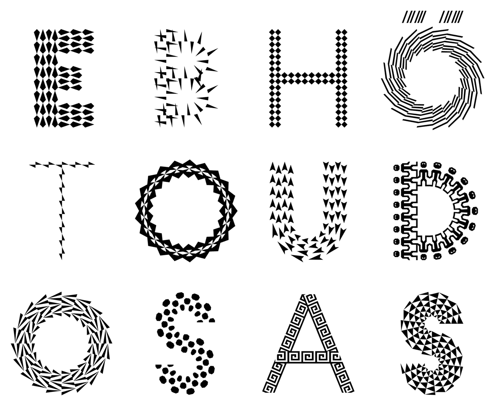
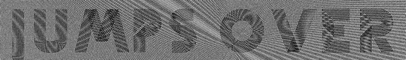
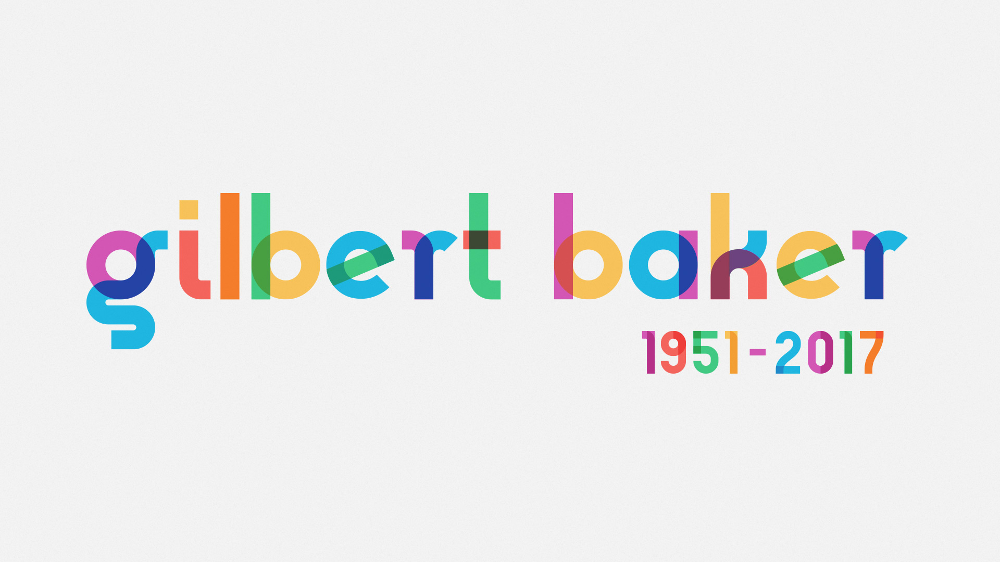
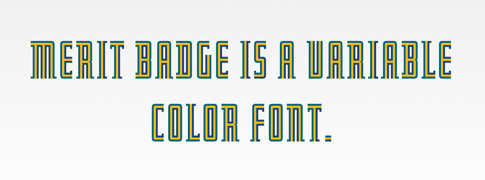
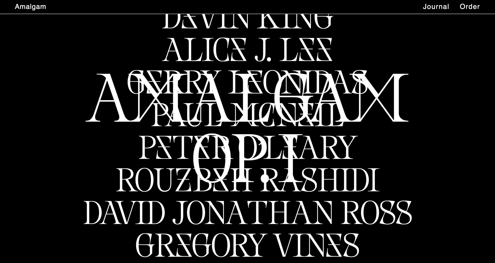
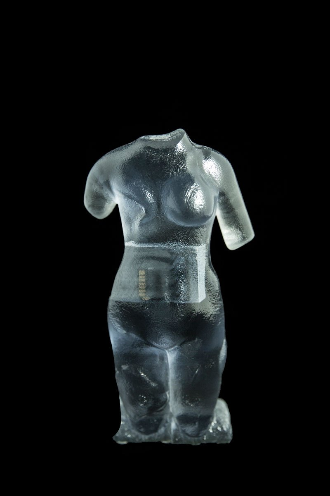
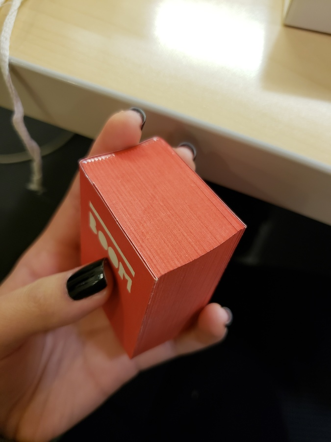
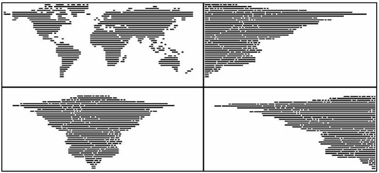
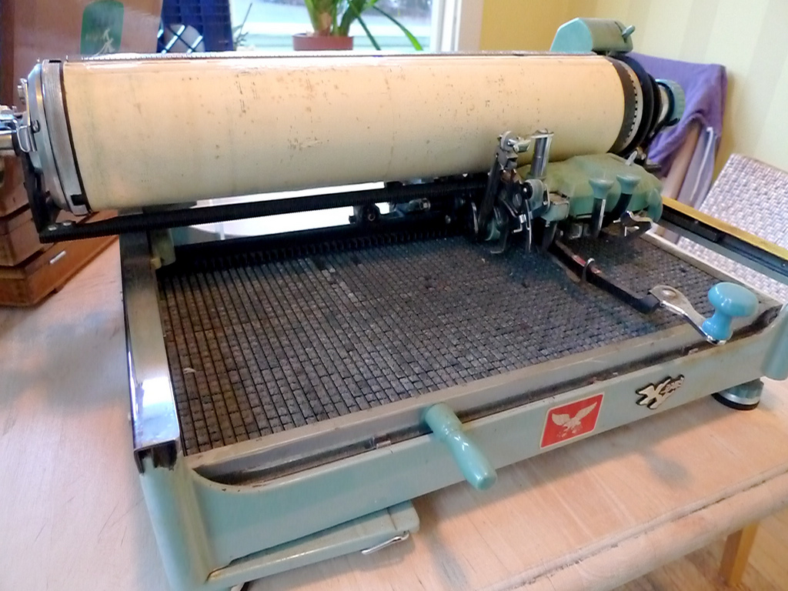

weeks 14 & 15November 23–December 6

— Kaba Ornament by Bram de Does
Capstone title: Bram “Bro” de Does: My Long Lost Father.
Found out about Kaba Ornament after mining through all of Alphabettes’ posts, but man, online pics do not do this justice. I got a hold of the book thanks to the interlibrary loan system. G’ bless ILL.
Kaba Ornament is a two modular system; the pieces are mirror images of each other and individually asymmetric. Combining asymmetric forms but mirroring them allows for building symmetric compositions. The shape of Kaba is Gestalten: The negative space is essentially the same shape as the positive space. This is largely why Kaba works as a simple yet dynamic module for pattern.
In the book, Bram explains his thinking behind ornaments, including some entertaining biographical snippets, and shows the process and eventual system that emerges for Kaba. He sketched configurations of Kaba over a long period of time using a felt pen, saying that he was more interested in the possibilities of combinations of a module than in the actual ornament itself.
“Nearly every morning I scrawled for half an hour with a thin felt-tip pen on a sheet of 5mm squared A4 paper. Working single-mindedly, shifting to automatic pilot, this was a fine transition from sleeping to waking; a therapeutic activity and advantageous to bowel movement, I can assure you… But I often forgot what I had sketched earlier and I did not want to think about it too much, as this only makes one feel tensed up.” (pg. 8).
Bram also does not own a computer, so his form of working was pure human automation and repetition. In doing so many iterations, Bram drew many of the mathematical possibilities of certain types of symmetries, which he found out about after reading some math books. Yo!
He also explains why the shape of his ornament works well for pattern making: the line adds a variation in texture, the edges are designed to connect well, and the 65° angle and curvature of the shape lends itself to dynamic compositions rather than just a series of perpendicular crossings. Looking at my current modular type, I have come across similar principles! Bram also acknowledges Islamic patterns and the tilemakers who have known this long before (ka’ba means cube in Arabic).
Reading about Bram’s process was enlightening for figuring out why certain letters in my currently small system work better than others for pattern. Currently I have a loose system (which is fine for the beginning stages) and some sense of rules, but that may make it too easy to derail and it’s not a good foundation for establishing consistency, emergence, and coherent differentiation. Examining how some letters work better than others is key. But most important is to keep trying variations until finding the one that just clicks while fitting in with the rest of the system.

— letters generated with the Pattern Type App
Eike Dingler, a TypeMedia graduate, created a pattern type inspired by the historical decorated type, such as those found in the style of the Book of Kells, and generative art. But his pattern type and how it was attempted to be made accessible is not too successful to me. Though he considered how the patterns fit into the letterform, it just doesn’t feel worth it as a typeface. The connection from his inspiration to his idea makes sense. It’s just missing that sense of awe and durability.
It makes sense that the letterform shapes are geometric since the pattern modules are geometric, and because the monolinear structure makes things legible and contemporary. It’s just kind of boring and overdone for geometric sans serif to take the weight of all pattern / multiplied type.

— [from Dingler’s t]m ’17 site](http://typemedia2007.com/pages/EikeDingler/){:target=”_blank”}
The GIF above is more successful—though in this case it is also typography and not just type design. But it’s more successful because the pattern interacts with its environment.
Color fonts seem to be the only way I’d be able to build in individual character opacity for my pattern type, since in InDesign and whatnot opacity is applied to objects (not letters), so the words would just become blobs. Might have to learn how to make a variable font and figure out how to create an opacity axis if time warrants it.

— Gilbert, made for pride events

— Merit Badge by DJR
Tutorial for making a variable color font by Harbor Type.
Matthew Carter has a wealth of knowledge. Starting to wonder if I should dig more into historical examples, less so as a model and more as an exercise in visual analysis to figure out techniques used to create patterned form, because really nothing is original. The perspective of previous creators who did not have computerized machines is also a view that is impossible to think of now. Type design is an interpretive practice, not merely an act of tracing. Tangential studies on something like gestalt shapes would also be helpful for my typeface.

— Nemesis font in use by Amalgam journal
I came across Nemesis by Baptiste Bernazeau several weeks ago. It’s a unique example of playing with ambiguous letterforms and the importance of context in reading. The ambiguities are not predictable ones since they are customized and possible by the typeface’s aesthetic structure. In a generalized view we think of d as a mirrored b, 6 as an upside-down 9, etc. Here Bernazeau makes X and M synonymous, Z and E, and potentially S and 8 and G and 6. This is a way of “compressing” the data of written language by reducing the number of distinct characters. What’s common in these projects that link letterforms is that it’s typically done in a binary way. Can written language still be readable with an alphabet that stays as 26 letters with only 13 visual forms?
The English language has somehow managed to boil it down to 26 letters. I still find that kind of amazing.

— Venus, Material Speculation series
Moreshin Allahyari came to WashU to give a talk. I still haven’t fully processed her additivist purpose and use of 3D printing; it’s interesting but doesn’t completely resonate to me right now, but I can see myself better understanding it eventually. Currently I struggle with being ok that I’m not really good at making art for social and political good. But in any case, I found the implant of SD cards into the 3D prints quite nice, and her idea of archiving as an art practice and making technological objects a visible part of the art. A tool becomes the art. The act of preservation reminds me of scholarship in type design, how type designers revive type that has fallen into disuse or that has been forgotten and how many document their source material. The things we make are prone to being forgotten, and it seems important to preserve cultural objects of today. Without them, a part of history is lost and so evidence of truth is lost.
She also mentioned the poetics of technology, which I am also interested in.
She also touched on this sort of fetishization or sort of high regard for studying cultures outside of the one we live in, when the one we grew up in has value too. Her work is a form of resistance as she says, and preservation is a form of persistence in such a volatile world.
Everything is a game made by David OReilly (he is against apostrophes). I found out about it through TCI (OReilly is blunt and straightforward). The flopping animals are great. It reflects the fundamental abstractness of digital media, how the physics of it are not actually governed by reality. The game allows people to explore the world from a variety of scales and perspectives as well as explore the absurdity of abundance. OReilly’s works have been acclaimed for being in between a game, interactive experience, and film.

— The Architecture of the Book by Irma Boom
I kept seeing this peculiar box in the art library so I decided to finally look into it. It’s a book by Irma Book: 800 pages, 5x3.8cm. Irma is known for being uncompromising.
“If it’s good … the audience will appear.”
— Irma Boom in Publisher’s Weekly
She’s prolific, but not every book is a success. She also cites historical examples. It’s about innovating on the past for new concepts and ideas. It’s all about poetically marrying form and content, not making novel inventions.

— The World Justified by Angela Detanico and Rafael Lain (2008), found here

— Mullaney’s Chinese typewriter
Thomas Mullaney is a Chinese History professor at Stanford who wrote the first extensive book about Chinese typewriters. It’s fascinating! He’s also studying type design at TypeWest (the San Francisco counterpart of Type@Cooper).
So far I’ve read through his blog journeying the research for his book The Chinese Typewriter: A History, and I’ve read the intro to the book. Mullaney seeks to address misconceptions about the typewriter and how those viewpoints reflect a Western sense of modern superiority. He gets at how the invention of the Chinese typewriter, a great feat because of the Chinese character system, is a form of resistance against the alphabetization of the Chinese language. He brings up how the Communist attempt to simplify the language didn’t really simplify much at all in terms of information technology. The Chinese typewriter is part of China’s attempt to modernize. The character system is fundamental to Chinese culture; China cannot escape its language without making its history inaccessible. Language historically changes gradually because convention is a form of accessibility. It is another form of evolution and adaption overtime.
This book very much falls in line with the idea behind the cultural biography project, which apparently is a trendy history project that, as Mullaney points out, may be inflating the value of objects. But in any case, Mullaney is not attempting to render the Chinese typewriter as a groundbreaking, impactful object on China. It is rather a lens, the pivot point for telling stories. Looking forward to reading more of the book and learning more about the relationship between written language and information technology. For example, the Chinese typewriter implemented a mechanical form of what we know as predictive text today.
I’ve been drawn to monospace fonts and typewriter forms for a while, but I’m not 100% sure why. Mullaney also mentioned in a video interview that he can’t fully articulate why he is so compelled by the Chinese typewriter and that he’s still trying to figure that out (this was before the book was released). He was able to articulate why it was important, but on a deeper level, it’s just not speakable why it’s personally significant. And that kind of doesn’t matter.